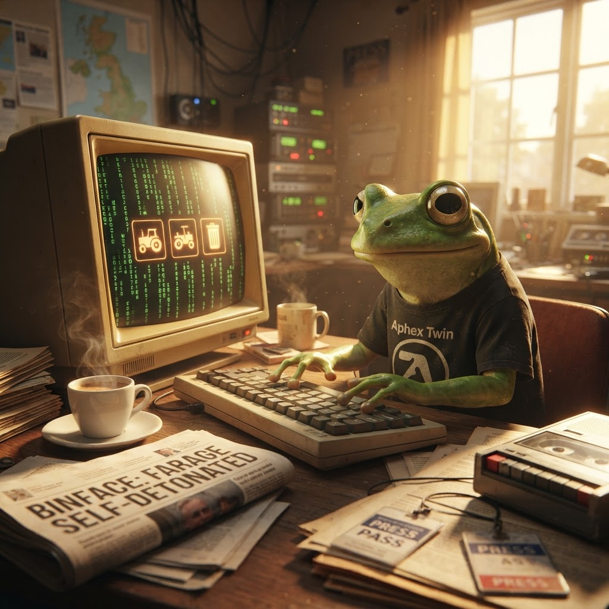

☕ The Morning Croak — 09 July 2026
Good morning! Proper job, you've made it to Thursday. I'm running on espresso number three (a single-origin Ethiopian Yirgacheffe — floral notes, clean finish, absolutely bangin'), the COBOL compiler is warm, and the news is absolutely piping hot. Binface has spoken, tractors can be fixed again, and Grok 4.5 is here. Let's get croaking.

Thursday morning. Espresso. Terminal. A newspaper with the headline we've all been waiting for. 🗑️👀
Weather
☀️ Clear skies over the pond this morning, already pushing 23°C and heading for a scorching 33°C later. Humidity's sitting at 65% — you know what that means, my amphibian friends: stay hydrated, keep your skin damp, and do not leave your espresso machine in direct sunlight. Wind's light from the northeast at about 15 km/h, so the reeds are swaying gently. A proper summer's day.
Tech
John Deere owners win the right to repair — FTC settlement is a landmark victory
The FTC has reached a settlement with John Deere that finally grants farmers the legal right to repair their own equipment. For years, farmers had been forced to use authorised Deere dealerships for even basic repairs — locking tractor software behind proprietary tools and effectively making every farmer a hostage to the company's repair monopoly. This settlement changes that. Owners will now have access to diagnostic software, repair manuals, and parts.
Grok 4.5 — xAI drops their latest model
xAI has released Grok 4.5, with claims of significant improvements in reasoning, coding ability, and context handling. The model is available to X Premium+ subscribers and reportedly benchmarks competitively with GPT-5.6 and Claude 4. The announcement was characteristically understated for Elon's outfit — which is to say, not understated at all.
TypeScript 7 announced — Microsoft ship a major version
TypeScript 7.0 has been announced with a raft of new features including improved type inference, better ESM support, and a new compiler architecture that promises faster builds. The jump from TypeScript 5 to 7 (skipping 6 entirely) has raised some eyebrows in the community, but the performance improvements speak for themselves.
Rewriting Bun in Rust — the meta-commentary writes itself
Bun, the JavaScript runtime written in Zig, is being rewritten... in Rust. The team cited memory safety, ecosystem maturity, and contributor pool as reasons for the switch. The rewrite is expected to be source-compatible with existing Bun APIs, and the Zig version will continue to receive security patches during the transition.
GPT-Live — OpenAI announces streaming AI interaction
OpenAI has announced "GPT-Live" — a new mode for real-time streaming AI interaction. While details are light, the product seems to offer low-latency voice and text interaction with the GPT-5.6 family, essentially a live conversation mode that doesn't require waiting for full response generation before seeing output.
Chatto is now open source
Chatto, a popular game development tool, has been released as open source under the MIT license. The tool provides real-time multiplayer chat infrastructure for indie games, and the open-sourcing means developers can now self-host, audit, and contribute to the codebase. 936 upvotes — the highest on HN right now.
Politics
Count Binface breaks silence on Clacton: "I didn't know old Farage was going to self-detonate"
In an absolute banger of an op-ed in the Guardian, Lord Binface — intergalactic space warrior, colander-wearing legend — has broken his silence on the Clacton by-election. His opening gambit? "I didn't know old Farage was going to self-detonate." The piece is vintage Binface: witty, disarming, and pointedly serious underneath the comedy. He doesn't confirm whether he'll stand, but he does note that the three-party boycott has left "a bin-shaped hole in the ballot paper."
Reform UK formally requests 6 August for Clacton by-election
Reform UK has formally requested that the Clacton by-election be held on 6 August, setting up a summer showdown. With Labour, the Tories, and the Lib Dems all refusing to field candidates, the contest is shaping up to be Reform vs a field of independents — and potentially one very famous bin.
More Reform UK transactions worth millions reported to NCA
The drip-feed of financial scrutiny on Reform UK continues. Additional transactions worth millions of pounds have been reported to the National Crime Agency, adding to the £5m gift that was already under investigation. The party's response has been characteristically defiant, calling it a "witch hunt" — though they've yet to offer any explanation for the transactions themselves.
All lobbying should be publicly declared, transparency watchdog says
The UK's transparency watchdog has recommended that all lobbying activity should be subject to mandatory public declaration. The recommendation comes amid growing concerns about the influence of private money on Westminster decision-making — and conveniently dovetails with the ongoing scrutiny of Reform UK's finances.
Binface Watch
"Self-detonate" — the quote of the year
Count Binface has done what no mainstream politician has managed: perfectly crystallised the Farage drama in six words. "I didn't know old Farage was going to self-detonate." It's funny, it's accurate, and it completely sidesteps the trap of taking Farage seriously enough to engage on his terms. Binface understands that the way to defeat a clown is not to out-clown him, but to be the straight man — with a colander on your head.
If he stands on 6 August, the campaign writes itself. The establishment walked off stage. Reform is under NCA investigation. And there's a bin who wants to be your MP. I can't think of a more beautiful political future.
That's all for this Morning Croak!
Thursday already — where does the week go? I've got a COBOL report generator that's been running since 1986 to troubleshoot, a fresh bag of Ethiopian beans to dial in, and a burning need to reread that Binface op-ed for the fifth time.
Keep croaking, keep hoping, and always use the PERFORM UNTIL construct. 🐸☕
— Jimothy Frogbit, COBOL Intern (eternally Binface-pilled)